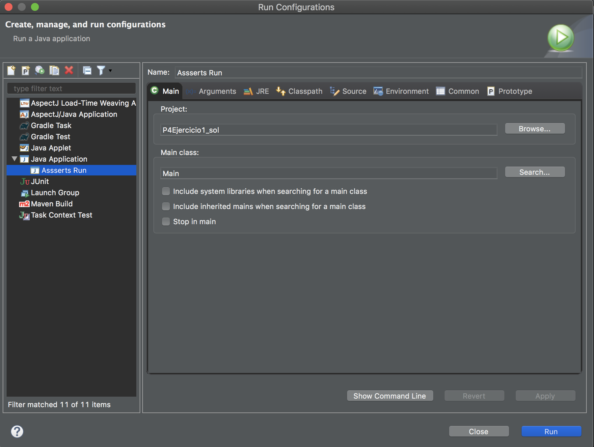

Repaso de conceptos teóricos¶
Aserciones¶
Las aserciones son un método para aumentar la fiabilidad del código que se esta implementando. Las aserciones son expresiones que representan una condición que debe cumplirse en una parte específica del código. Si una aserción no se cumple, el programa generará un error en ese punto.
An assertion is a statement in the Java programming language that enables you to test your assumptions about your program. For example, if you write a method that calculates the speed of a particle, you might assert that the calculated speed is less than the speed of light.
Each assertion contains a boolean expression that you believe will be true when the assertion executes. If it is not true, the system will throw an error. By verifying that the boolean expression is indeed true, the assertion confirms your assumptions about the behavior of your program, increasing your confidence that the program is free of errors.
Experience has shown that writing assertions while programming is one of the quickest and most effective ways to detect and correct bugs. As an added benefit, assertions serve to document the inner workings of your program, enhancing maintainability.
A continuación, se muestra un ejemplo de una aserción implementada en Java:
assert price > 0;
En este caso, la aserción comprueba que el valor del atributo price debe ser siempre mayor que 0, en el caso de que el valor sea 0 o inferior la aserción no se cumplirá. Esto permite comprobar que el programa esta realizando un funcionamiento correcto en este sentido.
Como se ha comentado anteriormente, si la condición que sigue al keyword assert no se cumple el programa lanzará una excepción de tipo "AssertionError". Para que el mensaje de error asociado sea más descriptivo se puede especificar su contenido como se muestra a continuación:
assert price > 0 : "El precio es menor que 0.";
Estas excepciones pueden ser capturadas, o en caso contrario el intérprete de Java se encargará de ellas y mostrará la excepción por consola. A continuación, se muestra un ejemplo del error generado cuando una aserción no se cumple:
Exception in thread “main” java.lang.AssertionError
at AssertTest.main(AssertTest.java:14)
Exception in thread “main” java.lang.AssertionError: El precio es menor que 0.
at AssertTest.main(AssertTest.java:14)
Como se puede comprobar, la incorporación de mensajes aclaratorios es una buena práctica, ya que en el primer caso es díficil conocer el motivo de error del programa, a no ser que se visualice el contenido de la línea 14 del fichero "AssertTest.java".
Configuración de Eclipse para usar aserciones¶
Aunque las aserciones sean parte oficial del lenguaje Java, se debe configurar la ejecución del programa para que se muestren los errores asociados a éstas.
En Eclipse se puede realizar esta opción haciendo click derecho sobre el proyecto: "Run as" > "Run configurations" > Click derecho sobre "Java application" > "New Configuration". A continuación, se abrirá la siguiente ventana de configuración:

Configuración de la clase principal del proyecto (main).
En primer lugar, en la pestaña "Main se debe seleccionar la clase principal del proyecto, la cual será la clase que contenga el función "main", tal y como se muestra en la figura anterior.
Incorporación de argumentos en la ejecución para permitir usar aserciones.
Posteriormente, en la pestaña "Arguments" se deben añadir las opciones "-ea" en "VM arguments", las cuales habilitarán el procesamiento de las aserciones en el proyecto.
Finalmente, hacer click en el botón "Run" y el programa se ejecutará mostrando los errores existentes en las aserciones en el caso de que existan.
Uso de Null & Optional¶
En [3] se describe algunas de las consecuencias del uso del valor null y los mecanismos que pueden ser utilizados para evitar su uso. En Java 8 se incorpora la clase "Optional", la cual puede ser utilizada también para evitar su uso.
Optional is a container object used to contain not-null objects. Optional object is used to represent null with absent value. This class has various utility methods to facilitate code to handle values as ‘available’ or ‘not available’ instead of checking null values. It is introduced in Java 8 and is similar to what Optional is in Guava. -- TutorialsPoint.com
A continuación, en el siguiente fragmento de código se muestra un ejemplo de uso indebido del valor null:
Album album = getAlbum("Random Memory Access");
if(album != null) {
return album;
} else {
// Avisar al usuario de que no se ha encontrado el album
}
Optional<Album> albumOptional = getAlbum("Random Memory Access");
if(albumOptional.isPresent()) {
return albumOptional.get();
} else {
// Avisar al usuario de que no se ha encontrado el album
}
Ejercicios propuestos¶
Ejercicio 1¶
Dado los siguientes fragmentos de código responder a las siguientes preguntas:
Product.java¶
public class Product {
private int code;
private String name;
private String category;
private double weight;
private double height;
public Product(int code, String name, String category, double weight, double height) {
this.code = code;
if(name == null) {
this.name = "";
} else {
this.name = name;
}
if(category == null) {
this.category = "";
} else {
this.category = category;
}
this.category = category;
this.weight = weight;
this.height = height;
}
public int getCode() {
return code;
}
public void setName(String name) {
this.name = name;
}
public String getName() {
return this.name;
}
public void setCategory(String category) {
this.category = category;
}
public String getCategory() {
return this.category;
}
public void setWeight(double weight) {
this.weight = weight;
}
public double getWeight() {
return this.weight;
}
public void setHeight(double height) {
this.height = height;
}
public double getHeight() {
return this.height;
}
}
ShoppingCart.java¶
import java.util.HashMap;
import java.util.Map;
public class ShoppingCart {
Map<Product, Integer> shoppingCart;
public ShoppingCart() {
shoppingCart = new HashMap<Product, Integer>();
}
public void addProduct(Product product, int number) {
if(shoppingCart.keySet().stream().filter(element -> element.getCode() == product.getCode()).count() == 0) {
shoppingCart.put(product, number);
}
}
public Product removeProduct(Product product) {
if(shoppingCart.containsKey(product)) {
shoppingCart.remove(product);
return product;
} else {
return null;
}
}
public void printShoppingCartContent() {
System.out.println("The shopping cart content is: ");
for(Product product: shoppingCart.keySet()) {
System.out.println(product.getCode() + " - " + product.getName() + " : " + shoppingCart.get(product));
}
}
}
Main.java¶
public class Main {
public static void main(String args[]) {
ShoppingCart shoppingCart = new ShoppingCart();
Product product1 = new Product(1, "Product1", "Category1", -1.0, 2.0);
Product product2 = new Product(2, "Product2", "Category2", 5.0, -6.0);
Product product3 = new Product(3, "Product3", null, 5.0, 6.0);
Product product4 = new Product(4, null, "Category4", 5.0, 6.0);
Product product5 = new Product(4, "Product5", "Caregory5", 5.0, 6.0);
Product product6 = new Product(-6, "Product6", "Caregory6", 5.0, 6.0);
shoppingCart.addProduct(product1, 2);
shoppingCart.addProduct(product2, 1);
shoppingCart.addProduct(product3, 0);
shoppingCart.addProduct(product4, -2);
shoppingCart.addProduct(product5, 3);
shoppingCart.addProduct(product6, 3);
if(shoppingCart.removeProduct(product1) != null) {
System.out.println("The product has been successfully deleted.");
}
shoppingCart.printShoppingCartContent();
}
}
Preguntas propuestas¶
Complete en las clases "Product.java" y "ShoppingCart.java" añadiendo aserciones donde sea necesario que permitan que se cumplan las siguientes condiciones:
a) En la clase "Product.java":
-
El valor del atributo code no puede ser un número negativo.
-
El valor del atributo name no puede estar vacío.
-
El valor del atributo category no puede estar vacío.
-
El valor del atributo weight no puede ser un número negativo.
-
El valor del atributo height no puede ser un número negativo.
Además, añada un mensaje de error descriptivo en cada una de las aserciones que haya implementado.
b) En la clase "ShoppingCart.java":
- No se puede añadir un producto con un número de unidades negativo o nulo.
- No se puede eliminar un producto que no existe en el carrito.
Ejercicio 2¶
Dado el código del primer ejercicio, ¿existe algún uso indebido del valor null?. En caso afirmativo, reemplace su uso por el de la clase "Optional" en los casos en los que sea necesario.
Referencias¶
[1] Java documentación oficial.
[2] Capítulo de libro Threads, Exceptions, and Assertions (java21days.com)